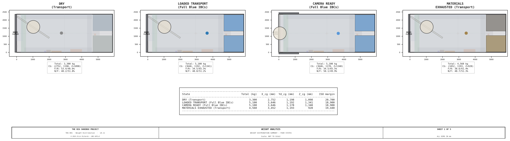
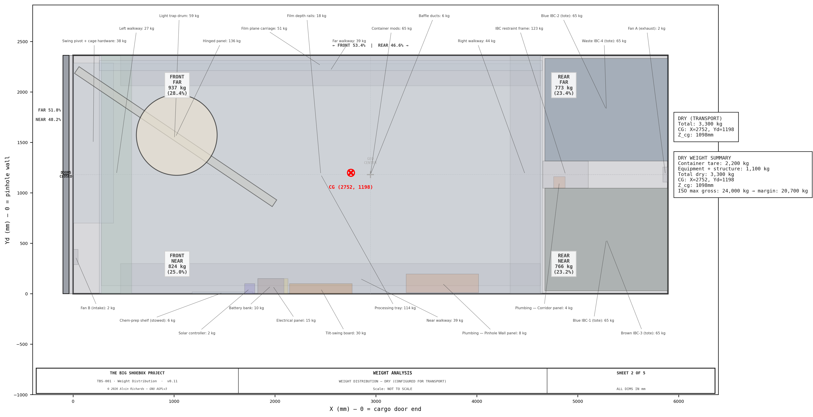
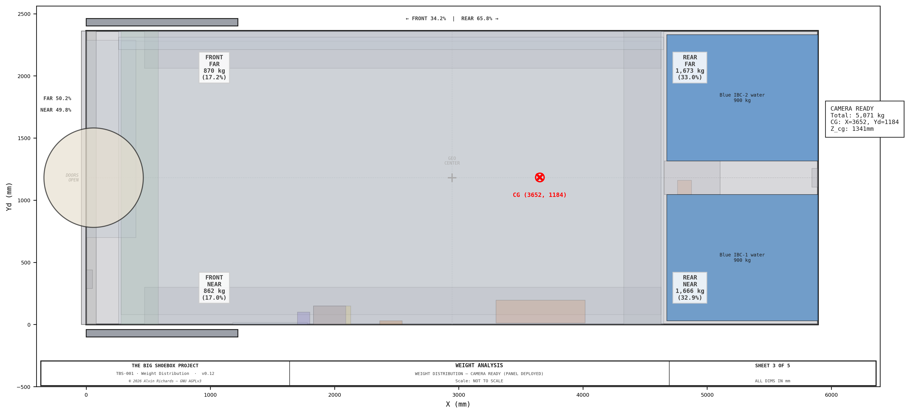
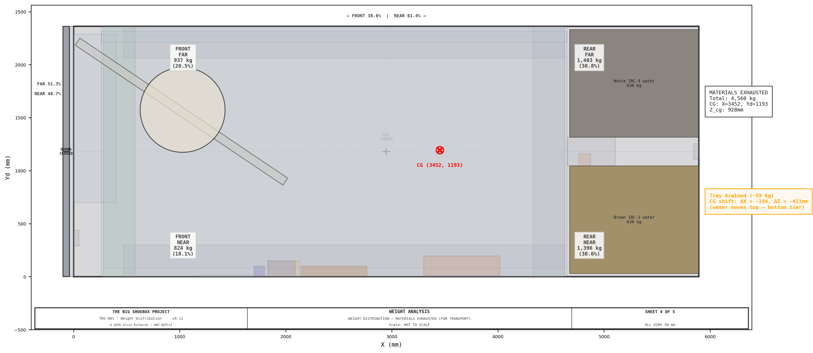
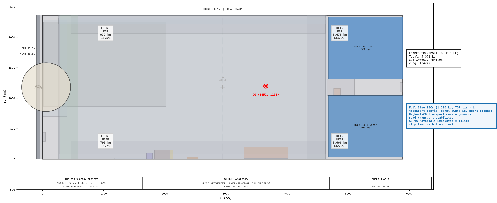

Weight Distribution Analysis¶
1. Purpose¶
This report provides a comprehensive weight analysis of TBS-001, covering:
- Total weight of the container with all equipment installed (dry)
- Total weight with all liquids added (camera ready)
- Weight distribution (front-back, left-right) for three operational states
- Center-of-gravity (CG) position and migration between states
- ISO container gross weight compliance verification
The analysis is essential for transport planning, trailer axle placement, structural assessment, and understanding how the system's weight distribution changes during a photographic session.
2. Container Baseline¶
| Parameter | Value | Source |
|---|---|---|
| Container type | 20 ft standard ISO | ISO 668 |
| Tare weight (empty container) | 2,200 kg (4,850 lbs) | Hapag-Lloyd Container Spec |
| Max gross weight | 24,000 kg (52,910 lbs) | ISO 668 |
| Max payload | 21,800 kg (48,060 lbs) | Gross − tare |
| Interior dimensions | 5,893 × 2,362 × 2,388mm | ISO 668 |
3. Component Weight Inventory¶
All weights are calculated from first principles (material density × volume) unless a specific report value is cited. Material densities used: mild steel 7,850 kg/m³, 304 SS 7,930 kg/m³, aluminum 2,700 kg/m³, marine plywood 600 kg/m³, HDPE (all light-lock plastic skin) 950 kg/m³, water 1,000 kg/m³.
3.1 Container¶
| Component | Weight (kg) | Position | Calculation Basis |
|---|---|---|---|
| Container shell (excl. doors) | 1,920 | Full footprint | Hapag-Lloyd 20ft ISO tare (2,200 kg) minus doors (280 kg) |
| Cargo door — near leaf | 140 | Closed: X=−100 to −40 / Open: along near wall | ISO door leaf, ~140 kg each |
| Cargo door — far leaf | 140 | Closed: X=−100 to −40 / Open: along far wall | ISO door leaf, ~140 kg each |
3.2 Structural Components¶
| Component | Weight (kg) | X Range (mm) | Yd Range (mm) | Calculation Basis |
|---|---|---|---|---|
| Hinged panel (incl. Ø900 housing + punch-out bay) | 161 | 0–80 (deployed); swung ~56° about the pivot (transport) | 0–2,362 | Framed panel: 1/8" HDPE plastic skins + 18mm-ply Fan-B mount band + 3mm-Al corner cores + 50×50×3 steel RHS center ≈ 119 kg + bolted 5mm-HDPE Ø900 housing ≈ 22 kg + 1/8"-HDPE punch-out bay ≈ 21 kg (first-principles). The Ø89 pivot post + bearings + cage are counted under "Swing pivot + cage hardware". See Hinged Panel Report §2.4–2.5 for the full movable-assembly breakdown |
| Light-trap drum (rotating) | 36 | 0–40 (deployed); swung ~56° about the pivot (transport) | 653–1,709 | Ø864 C-shell, 1/8" HDPE plastic skin, no fins (suspended with panel) + HDPE end caps + steel Ø75 stub shafts + 2× SKF 6215 bearings |
| Processing tray | 116 | 170–4,629 | 80–2,280 | 304 SS 1.5mm, 2 panels × 58 kg (Water System Report §4) |
| Near walkway | 37 | 470–4,629 | 0–300 | 10 brackets @ ~2.7 kg + 12.7 kg/m² GRP grating |
| Far walkway | 37 | 470–4,629 | 2,062–2,362 | Same as near walkway |
| Right walkway | 44 | 4,329–4,629 | 0–2,362 | Cantilever-rectangle: closed frame (2 long + 2 end beams) + 2 center cantilever arms off the IBC uprights (40×40×3 SHS) + wall cleats + combined corner plates (shared with the BR film rail) + GRP grating |
| Left walkway | 25 | 170–470 | 0–2,362 | Removable lift-out: GRP grating + 5 floor-leg cantilever brackets (50×50 post + arm on bare floor outside the tray) + drum-exit punch-out (deeper grating) |
| Swing pivot + cage hardware | 38 | 0–400 | 700–2,287 | Rotation transport hardware: pivot bearings + collar + drum cage + wall stays + rail saddles, at the cargo-door end. Estimate — refine vs the rotation-hardware BOM |
| Container mods | 65 | Distributed | Distributed | Light seal foam + reinforcement plates (estimate) |
| Chem-prep shelf (fold-down, stowed) | 7 | 1,180–1,780 | 0–22 | Wall-hinged fold-down: 18mm phenolic ply + 2" Al angle frame + spill lip + continuous piano hinge + 2 stays ≈ 7 kg. Modeled stowed (folded up vs the pinhole wall) in all states; the ~25 kg deployed mixing load is a transient prep case (film plane parked) — see Chemistry Prep Shelves §3 |
| Structure subtotal | 572 |
3.3 Equipment¶
| Component | Weight (kg) | X Range (mm) | Yd Range (mm) | Calculation Basis |
|---|---|---|---|---|
| Electrical panel | 15 | 1,910–2,210 | 0–150 | Wall-mount distribution panel |
| Battery bank | 13 | 1,540–2,220 | 0–150 | 1× 100Ah LiFePO4 @ 13 kg (standard build; +13 kg for the optional 2nd pack) |
| Solar controller | 2 | 1,700–1,800 | 0–100 | MPPT charge controller |
| Plumbing — Corridor panel | 5 | 4,760–4,874 | 1,046–1,160 | 4× Shurflo 2088 (P-01/P-03/P-04/P-05) + ACC-01 |
| Plumbing — Pinhole Wall panel | 8 | 3,300–4,016 | 12–196 | P-02 + 3-stage Big Blue filter (dry); on the pinhole wall — est. |
| Film plane carriage | 66 | 150–4,649 | 2,212–2,312 | 4mm Dibond ACM backing sheet ≈45 kg (4.75 kg/m² × the FP_W×FP_H face — moves with the plane) + plain 6061 Al angle frame (50.8×50.8×4.8mm; EXPENDABLE — kept aluminum for weight + cost, replace on pitting) + 58 nylon muslin clamps + 4 acetal skate carriages |
| Tilt-swing board | 30 | 2,089–2,709 | 0–100 | 620×620×45mm Al plate + spherical pivot + screws |
| Fans (A+B) | 4 | End walls | Near corners | 2× 150mm axial panel fans |
| Baffle ducts | 6 | Distributed | Distributed | 2× galvanized steel baffle ducts |
| Blue IBC-1 (tote) | 65 | 4,674–5,893 | 30–1,046 | 1,000L caged composite tare (top tier, near) |
| Blue IBC-2 (tote) | 65 | 4,674–5,893 | 1,316–2,332 | 1,000L caged composite tare (top tier, far) |
| Brown IBC-3 (tote) | 65 | 4,674–5,893 | 30–1,046 | 1,000L caged composite tare (bottom tier, near) |
| Waste IBC-4 (tote) | 65 | 4,674–5,893 | 1,316–2,332 | 1,000L caged composite tare (bottom tier, far) |
| IBC restraint frame | 90 | 4,654–5,104 | 1,046–1,316 | 50×50×3mm RHS restraint-only deep 4-leg box (totes direct-stack cage-on-cage): 4 full-height uprights (front pair X4654 + back pair X5104) + top/bottom rings + 4 floor flange feet + front retaining bars + 4 wall joist hangers (through-bolted to 4 exterior backing plates) + rear-panel brackets (Equipment Layout §5) |
| Equipment subtotal | 497 |
3.4 Dry Weight Summary¶
| Category | Weight (kg) | % of Dry Total |
|---|---|---|
| Container (shell + doors) | 2,200 | 67.3% |
| Structure | 572 | 17.5% |
| Equipment | 497 | 15.2% |
| Total dry | 3,269 | 100% |
Grating weight assumption: 1" (25mm) molded GRP (fiberglass) grating, vinyl-ester resin with grit top, weighs ≈12.7 kg/m² (McNichols MS-S-100, 2.60 lb/sf) over the 4.14 m² of deck. GRP is specified for corrosion immunity in the wet photo-chemistry environment, at a cost premium of ~$720–$890 (see cost breakdown §6a). 1" is the thinnest molded FRP made (15mm molded GRP doesn't exist), so the deck sits at 140mm (115mm support arm + 25mm grate) — raised to keep the spray-bar carriage clearance under the left cantilever arms.
4. Liquid States¶
4.1 Camera Ready (Full Blue IBCs)¶
All wash water loaded in the two top-tier Blue IBCs. Bottom-tier Brown and Waste IBCs are empty. Processing tray is empty (water is pumped to the tray during processing, not pre-loaded).
| Liquid | Volume (L) | Weight (kg) | Position | Tier |
|---|---|---|---|---|
| Blue IBC-1 water | 900 | 900 | X=4,674–5,893, Yd=30–1,046 | Top (Z=1,336–2,236) |
| Blue IBC-2 water | 900 | 900 | X=4,674–5,893, Yd=1,316–2,332 | Top (Z=1,336–2,236) |
| Total liquid | 1,800 | 1,800 |
Total loaded weight: 5,069 kg (3,269 dry + 1,800 liquid)
4.2 Materials Exhausted (Ready for Resupply)¶
After a full session, wash water has been consumed and redistributed. Blue IBCs are empty; Brown (recycled) and Waste IBCs hold the ~1,260L recovered (~630L each). The processing tray has been drained; the other ~434L was lost to the open process (evaporation, wet-print carryout, unrecovered residual — see water-system report §4).
| Liquid | Volume (L) | Weight (kg) | Position | Tier |
|---|---|---|---|---|
| Brown IBC-3 water | 630 | 630 | X=4,674–5,893, Yd=30–1,046 | Bottom (Z=168–798) |
| Waste IBC-4 water | 630 | 630 | X=4,674–5,893, Yd=1,316–2,332 | Bottom (Z=168–798) |
| Processing tray | — | 0 | Drained | — |
| Total liquid | 1,260 | 1,260 |
Total exhausted weight: 4,529 kg (3,269 dry + 1,260 liquid)
4.3 State Comparison¶
| State | Total (kg) | X_cg (mm) | Yd_cg (mm) | Z_cg (mm) | Front/Rear | Near/Far |
|---|---|---|---|---|---|---|
| Dry (Transport) | 3,269 | 2,727 | 1,204 | 1,097 | 53.9/46.1% | 48.1/51.9% |
| Loaded Transport (Blue full) | 5,069 | 3,635 | 1,196 | 1,342 | 34.8/65.2% | 48.8/51.2% |
| Camera Ready (Deployed) | 5,069 | 3,634 | 1,181 | 1,341 | 34.8/65.2% | 50.0/50.0% |
| Materials Exhausted (Transport) | 4,529 | 3,438 | 1,197 | 926 | 38.9/61.1% | 48.6/51.4% |
Loaded Transport is the camera-ready water load (full top-tier Blue IBCs, 1,800 kg) carried in the transport configuration — panel swung in, cargo doors closed. The water sits in the top tier, so its vertical CG is **Z=1,342mm —
416mm higher than the exhausted state (926mm), making it the highest-CG transport case that governs road-transport stability (tie-down and cornering). The exhausted (return) state is both lighter — 4,529 kg, since ~434 kg of the processed water is lost to the open process rather than recovered — and lower-CG, so it is never the governing case. Even at the loaded worst case the static sideways tip threshold is ~41°** (½-width 1,181mm ÷ Z_cg 1,342mm), so the deliberate Blue-on-top layout stays comfortably stable.
4.4 Optional Max-Blue-Fill Transport Case¶
The standard load fills each Blue tote to 900L (1,800L). The totes are 1,000L vessels, so the equipment-layout report §8 notes they can be topped further — to ~1,900L (~950L per tote) — for one more print (~15). Re-running the weight model confirms even that heavier load stays well within transport limits:
| Loaded Transport | Gross mass | Z_cg | Static tip threshold |
|---|---|---|---|
| Standard Blue fill (1,800L) | 5,069 kg | 1,342mm | 41.3° |
| Max Blue fill (1,900L) | 5,169 kg | 1,359mm | 41.0° |
The extra ~100 kg sits in the top tier, raising the worst-case vertical CG only 17mm and lowering the static sideways tip threshold ~0.4° (to 41.0° — still far above any rollover concern). Gross weight stays at ~22% of the ISO 668 24,000 kg limit. The optional max-Blue-fill top-up is therefore transport-validated.
5. Weight Distribution Diagrams¶
1 — Summary Comparison¶
Three-state side-by-side comparison with CG positions and summary table. The dry state is nearly balanced; the camera-ready/loaded states shift the CG rearward by ~905mm (the lighter exhausted return state by ~710mm).

2 — Dry Weight (Configured for Transport)¶
All dry components shown at actual footprint positions, color-coded by category. The hinged panel is swung ~56° about the pivot (transport position), shifting its mass toward the far/pivot side. The right end zone (IBC stack area) is the densest zone.

3 — Camera Ready (Panel Deployed)¶
Weight distribution with full Blue IBCs (top tier) and hinged panel deployed to its operational position at the cargo door end (X=0–80). CG marker shows the loaded center of gravity at X=3,634, Yd=1,181. Quadrant weights show the rear-heavy bias from the IBC stack.

4 — Materials Exhausted (Configured for Transport)¶
Water has migrated from top-tier Blue IBCs to bottom-tier Brown/Waste IBCs, and ~434 kg of it has been lost to the open process (evaporation, wet-print carryout, unrecovered residual — see water-system report §4), so only ~1,260 kg is recovered. The hinged panel is swung ~56° about the pivot to its transport position. Total mass therefore drops to 4,529 kg (~540 kg below the loaded state), and the vertical CG drops by 416mm (Z: 1,342 → 926mm) as the remaining water settles in the bottom tier. This is the lightest, lowest-CG transport state — never the governing case.

5 — Loaded Transport (Full Blue IBCs)¶
The camera-ready water load (1,800 kg in the top-tier Blue IBCs) carried in transport configuration — panel swung in, cargo doors closed. The water is in the top tier, raising the vertical CG to Z=1,342mm (+416mm vs the lighter exhausted state at 926mm). This is the worst-case transport vertical CG.

6. Analysis and Findings¶
6.1 ISO Gross Weight Compliance¶
All four states are well within the ISO 24,000 kg maximum gross weight:
| State | Total (kg) | Margin (kg) | Utilization |
|---|---|---|---|
| Dry | 3,269 | 20,731 | 13.6% |
| Camera Ready | 5,069 | 18,931 | 21.1% |
| Materials Exhausted | 4,529 | 19,471 | 18.9% |
| Loaded Transport | 5,069 | 18,931 | 21.1% |
The container operates at about 19–21% of its rated capacity in all states. There is no structural concern from a gross weight perspective.
6.2 Left-Right Balance (Near/Far)¶
The near/far split stays close to balanced in all states (48.1–50.0% near). The transport states lean slightly far (up to ~51.9% far) because the swung panel + drum carry their mass toward the far/pivot side. This is by design: equipment on the pinhole wall (near side) is lightweight (electrical panel, battery, and solar controller totaling ~28 kg), the pump manifold is on the Corridor Plumbing Panel centered in the IBC corridor (Yd=1,046), and the IBC stack is centered across the container width. The film plane carriage contributes ~66 kg to the far side but is offset by the tilt-swing board on the near side.
6.3 Front-Rear Balance¶
The dry/transport state has a front-biased split (53.9/46.1%), with CG at X=2,727mm. This front bias comes from the cargo doors (280 kg total) being in their closed position at X≈−70mm, pulling the CG toward the cargo door end. The hinged panel is also swung ~56° about the pivot, keeping its mass in the front (door-end) half.
When liquids are added and the panel and doors are deployed (camera ready), the CG shifts rearward to X=3,634mm (~905mm past the dry CG). The doors swing open flat against the side walls (X=0–1,221mm), redistributing
280 kg from X≈−70 to X≈610, while 1,800 kg of water loads in the IBC stack zone (X=4,674–5,893mm). This creates a 34.8/65.2% front/rear split — the heavy 1,000L totes sit at the sealed end.
Transport implication: When loaded for transport (materials exhausted, doors closed), the container's CG is at 58.3% of the length from the cargo door end. For trailer placement, the container should be positioned so the rear (sealed) end sits over or near the trailer axle(s) to balance the load.
6.4 Vertical CG and Self-Stabilizing Design¶
The most significant finding is the vertical CG migration between states:
- Loaded (top-tier water): Z_cg = 1,342mm (1,800 kg of water in top-tier IBCs)
- Materials Exhausted: Z_cg = 926mm (1,260 kg of recovered water in bottom-tier IBCs)
- ΔZ = −416mm (CG drops ~416mm during a session)
This is an inherent self-stabilizing feature of the 2×2 IBC stack design. 1,800 kg of clean water is loaded into the top-tier Blue IBCs and processed during a session; ~1,260 kg is recovered into the bottom-tier Brown/Waste IBCs and ~434 kg is lost to the open process, so total mass drops from 5,069 to 4,529 kg. The water that remains migrates from the top tier to the bottom tier, dropping the center of gravity by
416mm and improving stability through the session.
6.5 Walkway Weight Sensitivity¶
The walkway system contributes 150 kg (4.6% of dry weight), making it the second-largest structural subsystem after the hinged panel. The deck grating — 1" (25mm) molded GRP (fiberglass) at ≈12.7 kg/m² — is the largest single line in the walkway; GRP is specified for corrosion immunity in the wet photo-chemistry environment. The GRP is vinyl-ester resin with a grit top for slip resistance; the 25mm (1") grate sets the 140mm deck height (the spray-bar carriage clearance beneath it is set by the Ø32-wheel / 40×25-SS-beam shrink — see the Processing Tray & Spray Bar report).
7. Source References¶
- ISO 668:2020 — Series 1 freight containers: Classification, dimensions and ratings
- Hapag-Lloyd Container Specification — 20ft Standard Dry Container
- McNICHOLS — Fiberglass Grating / Grating Pacific — Molded FRP — Molded GRP (fiberglass) grating, vinyl-ester, weight tables
- Schütz Ecobulk MX 1000L — 1,000L caged composite IBC tote specifications (~65 kg tare; all four positions standardize on this size — a 600L caged tote does not exist)
- Water System Report — Processing tray weight (§4), IBC layout (§5)
- Light Trap Selection — Panel + drum weight (§7)